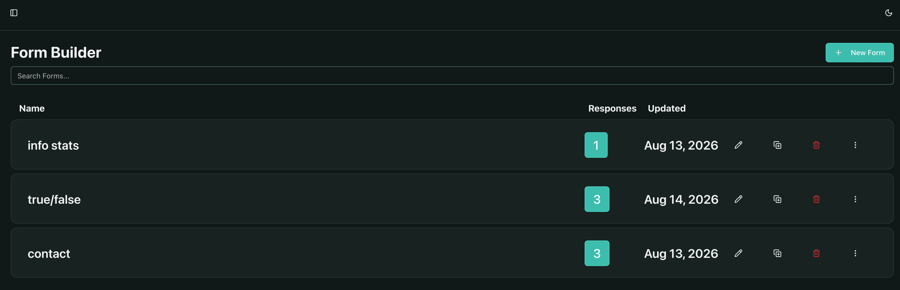
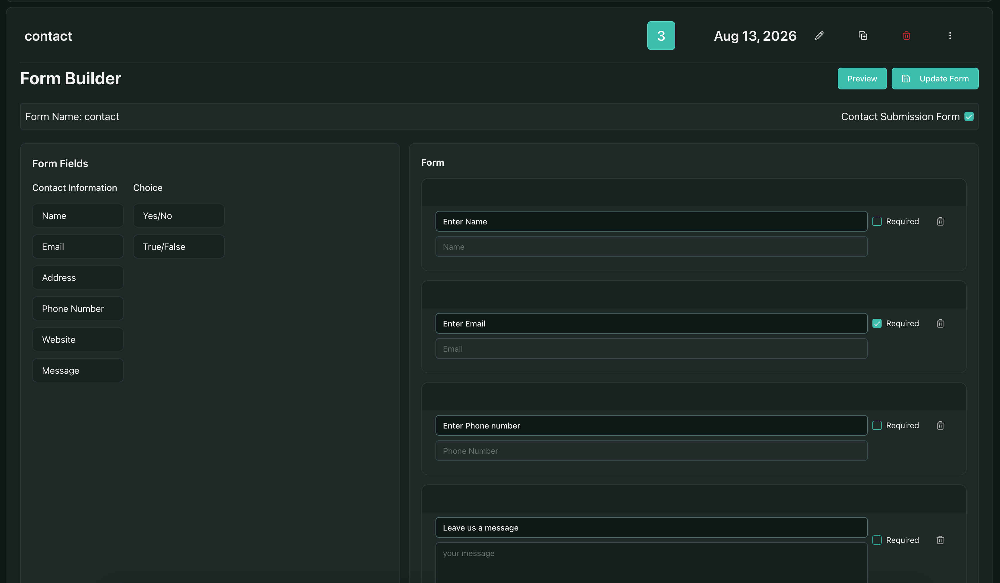
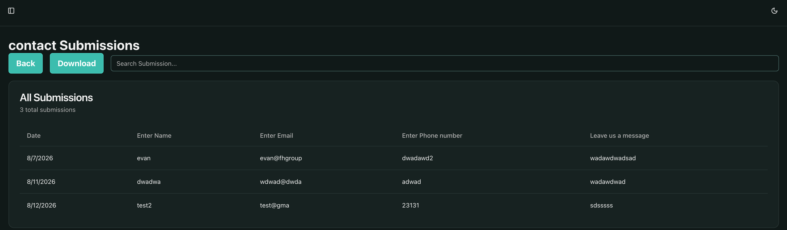

FH-Group – Erie, PA
Web design Internship
Summer 2026

This image shows the backend cms for admins which shows a search list for forms that already exist. They can create new froms from this page. If the admin wants to access one of the forms they have a few buttons on each form section. Clicking the anywhere on the Form expands the form down showing the form builder and the editing tools.(picture on the right) Clicking the number under responses brings you to a page which hold a table showing the submissions. Pencil lets you change the name, page icon duplicates, trashcan deletes the form, and the three dots opens a dropdown menu for holding more options.

This image shows what happens when you click on the form it opens up into the form builder. A few buttons at the top, the preview shows what the form would look like on the front end and an update button to save changes. The contact form checkbox is for marking the form as a contact form. The form field box on the left lets you drag and drop certin question types into the right side form box. The order can then be changed by dragging the questions around y grabing the darker top section. The admin can insert text into the question and mark it is a required question or delete it from the options on the right.

This image shows the submission page of a selected form. A download button lets you download the submission data. The search lets you search for specific answer in the submissions